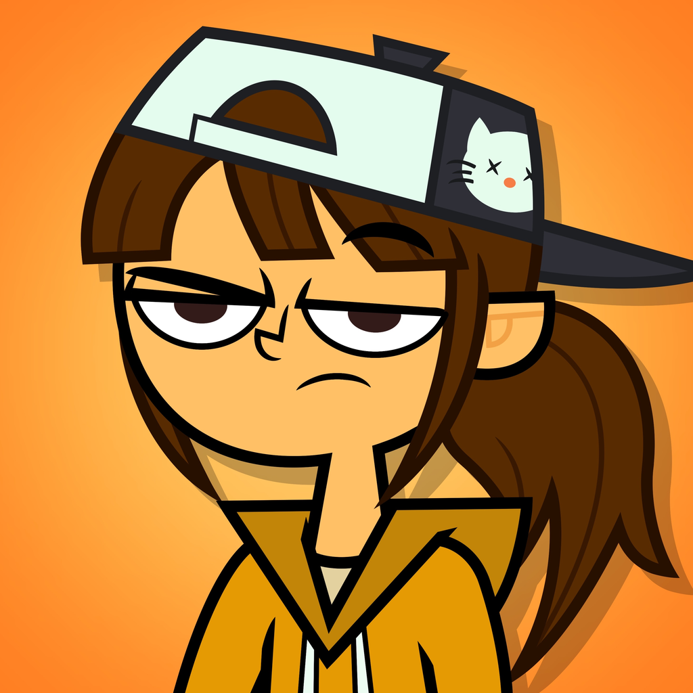
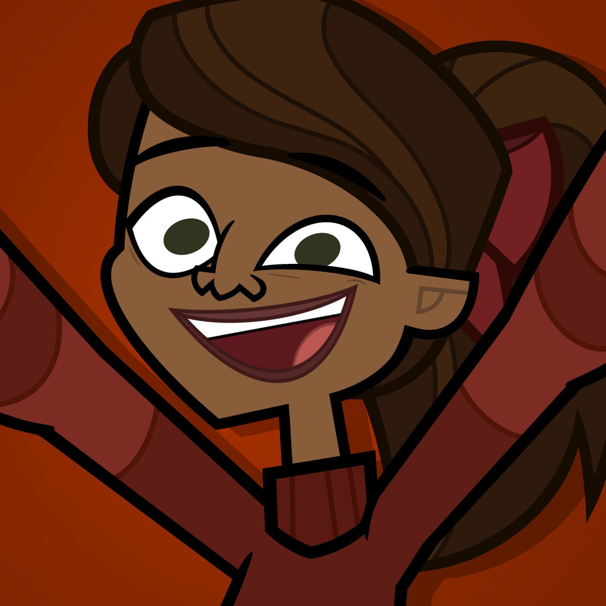
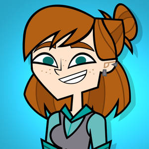
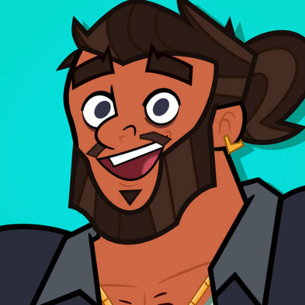

The TraitorsEpisode 10 · AfternoonThe Traitors' Chess
Mission · Episode Ten
The Traitors' Chess
Last night the Traitors answered five questions about every one of you. Today you guess
what they said, on a board with your names on it.
One team · twelve playersFive questions£2,000 a right answerThe Gambit · a Shield for one answer alone




The Briefing
Alan Cumming · your host
A long hall with a chessboard for a floor. Every square has a player's name on it, and at
the far end, on the black side, stands a hooded bronze figure.
Alan Cumming walks the length of the board and stops beside the hooded statue.
Last night, while you slept, the Traitors answered five questions about you.
For each question you will choose one of these pieces and put it on the square of the person you think they named. You decide together, and one of you moves it.
Alan Cumming rests a hand on the statue's shoulder.
Then this moves. If you are right, it knocks your piece over. If you are wrong, it stands on the name the Traitors actually wrote. Every right answer is two thousand pounds.
Once, and only once, one of you may step onto the board and take a question from the rest of you to answer alone.
Answer it right and the money is yours to give the pot, and a Shield is yours to keep. Answer it wrong and that money is gone.
The Traitors among you already know every answer. Watch who seems to. Begin.
The wolf and the fox, and a room trying to think like the people who want it dead.
Made the case
Ellie
Who leads the pack?
Ellie said the Traitors would name whoever talks first at every table, and there was only one person that was. The group put the wolf on Brick.
Right · £2,000
Brick
The statue turned, slid across the board, and knocked the wolf off Brick's square.
Suspicious
Priya & Bowie
Who is the most cunning?
Bowie said "Julia" before anybody else had spoken, and held to it through four other names. Priya watched him do it.
Priya · confessionalNobody's that sure about what the Traitors think. Unless they were in the room.
claim · Priya → Bowiesuspicion +0.30
Right · £2,000
Julia
The fox went on Julia. The statue knocked it flat, and Bowie was the only person who did not look surprised.
IIThe Owl and the Lambmentalboldness
Two harder questions, and one person deciding the group should not answer the second.
Talked round
Cody
Who notices the most?
Cody argued for Dawn for five minutes and the group gave in to make him stop. The owl went on Dawn.
Wrong
Fiore
The statue passed Dawn's square and stood on Fiore's. The Traitors think Fiore sees the most. Fiore did not enjoy hearing it.
record · named as watchful
The Gambit
Priya
Who would you never suspect?
Priya stepped onto the board before anybody had started arguing, picked up the lamb, and put it on Gabby.
Priya · confessionalThey'd never suspect the girl who cried at the first breakfast. I wouldn't either. That's the point.
Shield
Gabby & Priya
The statue knocked the lamb off Gabby's square. Two thousand for the pot, and a Shield for Priya, handed over in front of everyone.
shield · Priyaseen by · everybodycrowd · Priya masterful ×0.8
IIIThe Crownstrategictemperament
The last piece, and the question nobody wants to be seen answering well.
Split room
Manu
Who will win?
Manu said the Traitors would name whoever they least wanted to face at the end, and half the room agreed. The crown went on Alec.
Wrong
Brick
The statue stood on Brick. The Traitors think Brick wins. Brick laughed longer than the joke deserved.
Suspicious
Ellie & Julia
Julia had said nothing all afternoon, and nothing on the crown either. Ellie noticed that the one person who never guessed was the one person who never got a guess wrong.
Ellie · confessionalIf you know the answers, the safest thing to do is not play. She didn't play.
claim · Ellie → Juliasuspicion +0.22
The afternoon · solid
Three of five. Six thousand for the pot, a Shield for the one person brave enough to play alone, and two
people now watching the ones who seemed to know too much, or too little.